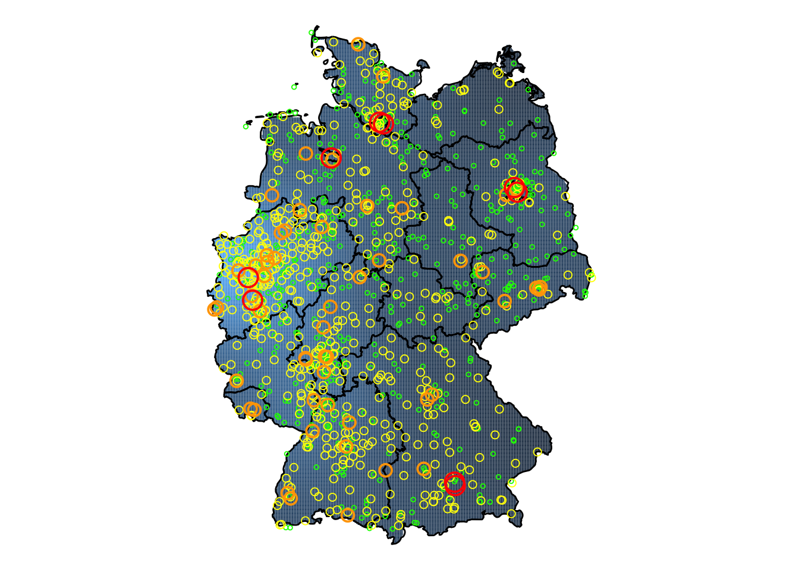
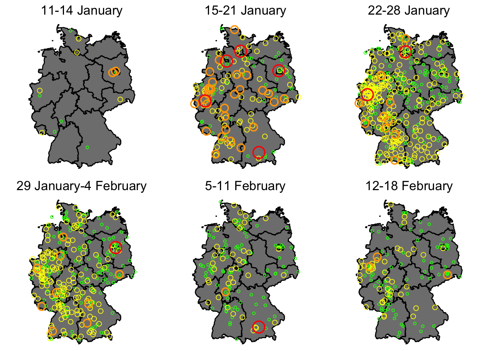

Counter-mobilisation against the AfD - politics and law
Demonstrators against the AfD should mind the distinction between the political arena and the legal logic of the courts. Counter-mobilisation can hardly affect the material facts that are decisive in legal measures against the AfD, but counter-mobilisation in the political arena can present a powerful challenge to the AfD.
Germany has witnessed a wave of demonstrations in recent weeks. Revelations about a meeting of far-right politicians, most conspicuously from the Alternative für Deutschland (AfD), discussing plans for mass deportations has led millions of people to pour out onto the streets across Germany. Demonstrators’ demands have ranged from encouraging but vague—‘Show civil courage!’, ‘Everyone, together, against fascism!’—to highly specific—‘Ban the AfD!’, ‘Suspend Bjorn Höcke’s political rights!’. Amid the flood of demonstrations, the distinction between political tasks and legal considerations has sometimes been obscured by demonstrators. But demonstrations have different prospects for achieving an impact in political and legal arenas. In this post, I will discuss the prospects for impact in those arenas—and whether the recent wave of demonstrations has the power to reach those impacts.

Figure 1. All demonstrations against the AfD since 11 January 2024. The red circles represent demonstrations of 50,000 or more; the orange, between 10,000 and 50,000; the yellow, between 1000 and 10,000; and the green, fewer than 1000 participants. (Data from the TAZ newspaper.)
The course of events
On 25 November 2023, a clutch of politicians from the AfD as well as from the WerteUnion (a new far-right party-to-be that broke away from Germany’s large centre-right party, the Christlich Demokratische Union Deutschlands) met with far-right activists, most notably Martin Sellner. As these influential far-right figures discussed plans if the AfD should enter government, such as large-scale deportations of residents and perhaps even of German citizens, they were being observed. On 10 January 2024, the news outlet Correctiv published a report (and in English here) about this meeting. Two days later, on 12 January, a few hundred people gathered in Berlin and Darmstadt to protest this deportation ‘masterplan’.
Mobilisation in a militant democracy
In the weeks since the first mobilisations, hundreds of demonstrations have been organised, drawing thousands of participants—sometimes tens of thousands, a few times even hundreds of thousands. What are the demands of the demonstrators? Some basic political goals are fairly clear, chiefly: don’t vote for the AfD. Countering the AfD politically is crucial in this ‘super election year,’ when votes are slated for the European Parliament and for regional parliaments in Sachsen, Brandenburg, and Thüringen. So the mobilisation of thousands of demonstrators, singing together on public squares across Germany is encouraging—and worrying for the AfD.
Wehrt euch, leistet Widerstand gegen den Faschismus hier im Land. Auf die Barrikaden, auf die Barrikaden!
There are some signs that suggest the wave of demonstrations is having an impact: some polling shows AfD support dropping a few percentage points since they began; and in a recent council election (in Saale-Orla-Kreis), AfD candidate was unexpectedly defeated, possibly an effect of the demonstrations.
Beyond these political goals, demonstrators have referred to legal options. Whereas in other countries demonstrators might have few policy options or other prospects to address concerns about a radical party, the demonstrators in Germany have a whole menu of measures that they can plausibly suggest.
several sections of the Criminal Code (e.g., 86/86a StGB, 130 StGB).
Demonstrators have referred to these instruments. More than 800,000 signed a petition for a party ban against the AfD, which would entail the Bundestag, the Bundesrat, or the federal government filing for a ban with the Constitutional Court. 1.6 million called for the suspension of the right of the influential ‘fascist’ AfD leader in Thüringen to stand for election, which would also entail a visit to the Constitutional Court. Similarly, the high court recently upheld the withdrawal of state financing from a small right-wing extremist party (NPD), which shows a path to hitting the AfD in the pocketbook. An organisational ban of the AfD’s youth wing, Junge Alternative, is also an option, but seems inadequate to some demonstrators. And their argument is understandable: if we’re defending democracy from a fascist party, then dissolving their youth wing falls well short of a sufficient response.
Yet the snag to these legal options is that applying them to the AfD will involve meeting the legal logic of the courts. While German governments have shown an instrumental logic in applying organisational bans—a paper of mine currently under review reveals as much—applying a party ban of the AfD or suspending an AfD politician’s rights or withdrawing state financing requires a ruling from the Constitutional Court. Social pressure may spur the government or parliament to act against the AfD, but the Court has set (justifiably) high bars for restricting parties. The size of anti-AfD demonstrations are not a relevant consideration and there is little demonstrators can do to affect the material facts of the legal case.
Demonstrations’ powerful potential
As political goals and legal remedies crystallise among demonstration organisers, participants, and observers, the question becomes whether these objectives can be realised. If there was any doubt on the point, demonstrations are powerful social movement tools. But demonstrations also have a strong tradition of countering the far right. Demonstrations can demobilise far-right protest campaigns. They can decrease electoral support for far-right parties, as in Italy and Greece. And they can push governments to restrict and even proscribe far-right organisations. These are the sorts of major impacts that demonstrations against the AfD might achieve.
However, the anti-AfD campaign is a coalition, which creates certain fragilities. Multiple organisations—sometimes dozens—have collaborated to mobilise demonstrations, especially for the largest events. The different interests of those organisations are not suspended just by coordinated organising activity. So attending some demonstrations, participants might hear calls to protect the environment as well as protecting the country from the AfD; they might hear criticism of the current government or of other parties (besides the AfD) or receive flyers opposing German military spending. These manifestations of movement organisations’ other interests are risky for the anti-AfD campaign. To have an impact, demonstrations should focus on clear, shared goals.
Moreover, if it is to be effective, the anti-AfD campaign has to overcome the limitations of negative campaigning. Arguing against something can be a weak rhetorical position, which has hindered previous campaigns. For example, in Hungary ahead of the 2014 parliamentary elections, a campaign mobilised to encourage people to ‘Vote against Jobbik’ (szavazz a Jobbik ellen). (At that time, Jobbik was Hungary’s most extreme right-wing party.) The campaign failed and Jobbik made significant electoral gains. I am inclined to think the decidedly negative campaign message is part of the reason why. To avoid this trap, demonstrations should focus on the positive steps of democratic participation and voter turnout.
Demonstrations against the AfD
How is the campaign of demonstrations against the AfD unfolding? The flurry of news coverage, the numerous demonstrations, and the large numbers of participants have sometimes obscured two challenges for this anti-AfD campaign: first, the tide of demonstrations will ebb—in fact, it already has. This attenuation reduces social pressure (on the AfD, on potential AfD voters, on politicians who might use militant democracy’s instruments to restrict the AfD) and thus reduces the potential impact of the demonstrations. Second, demonstrations have been fewest and smallest in the places where they are most needed, in Eastern Germany. The east is where the AfD is strongest and where the three regional elections this year will take place.
Diminishing returns
Since mid-January, there have been nearly 1000 demonstrations against the AfD. But some conspicuous clustering has occurred. In the first full week after the demonstrations began, 15-21 January, 143 demonstrations took place and they mobilised more than 1.2 million people. This is the high-water mark for participation, accounting for the many large demonstrations in the visualisation below. The following weeks saw a proliferation of events but less well attended; more demonstrations, but fewer participants. Now, in February, demonstrations are fewer and smaller (apart from another massive demonstration in München). As the demonstrations continue to subside, the possibility of continued social pressure comes to rest more and more on the individuals and groups that participated. Will they remain active in other ways? Will they organise new protests, mount new campaigns?
Number of demonstrations and cumulative participants in the weeks since the start of 2024. (Data from the TAZ newspaper.)
Week
Total Demonstrations
Total Participants
02
13
54,750
03
143
1,243,740
04
397
1,013,670
05
315
731,710
06
132
199,520
07
130
163,865

Figure 2. Demonstrations against the AfD in the weeks since 11 January 2024. The red circles represent demonstrations of 50,000 or more; the orange, between 10,000 and 50,000; the yellow, between 1000 and 10,000; and the green, fewer than 1000 participants. (Data from the TAZ newspaper.)
Look to the east
The AfD is strongest in Eastern Germany. September’s regional elections in Sachsen, Brandenburg, and Thüringen might well see the AfD win pluralities in all three. Demonstrations could change this, lowering the acceptability of the far-right party, as has happened in Italy and Greece. But demonstrating against the AfD in Eastern Germany can be dangerous. Threats and harassment have been reported by activists working against the far right. Counter-mobilisation against the AfD in Eastern Germany not only needs to grapple with the attenuation of demonstrations but the hostility of certain menacing AfD supporters.
Quo vadis
Counter-mobilisation is a vital part of addressing far-right threats. When counter-mobilisation is unified, focused, and resilient is when it is most effective. Participants in the surge of anti-AfD demonstrations should therefore concentrate on a clear set of shared goals: supporting voter turnout, encouraging voting for one of the democratic parties (i.e., reject the AfD), demanding the government examine the feasibility of withdrawing state financing for the AfD and the possibility of applying instruments of militant democracy. Besides giving demonstrators a sharper expectation of efficacy, those shared goals can direct the energies of counter-mobilisation towards the political arena, where they can have the greatest impact.
The discussion of a party ban of the AfD is good. Such legal measures exist for a reason, to protect the democratic system and constitutional order. It is healthy for citizens to discuss and debate the boundary between acceptable radicalism within a democracy and dangerous extremism that threatens democracy. Restrictive measures should sometimes be used, with caution, but just talking about the possibility reinforces the fact that the AfD is a far-right party and not a normal democratic party. Counter-mobilisation can do little to affect the legal logic that will decide whether certain restictions can be imposed on the AfD. But demonstrating, petitioning, mobilising voters, agenda-setting and problematising the AfD’s extremity? These are tools of the political arena, where the anti-AfD campaign can have a major impact.
Data availability
An interactive map of demonstrations against the AfD in the weeks since 11 January 2024. (Data from the TAZ newspaper.)
You can download the data by clicking the button below.
The basic data is taken from the monitoring by the TAZ newspaper, which has kept a monitor of the recent demonstrations against the AfD, available at https://taz.de/demo.
Source Code
---title: Counter-mobilisation against the AfD - politics and lawdate: 2024-02-12description: "Demonstrators against the AfD should mind the distinction between the political arena and the legal logic of the courts. Counter-mobilisation can hardly affect the material facts that are decisive in legal measures against the AfD, but counter-mobilisation in the political arena can present a powerful challenge to the AfD."image: 2024-02-10antiAfD_density.pngtwitter-card: image: "2024-02-10antiAfD_density.png"open-graph: image: "2024-02-10antiAfD_density.png"categories: - Alternative für Deutschland (AfD) - counter-mobilisation - Germany - banning - demonstrations - far right - proscription---*<span style="font-family:Garamond; font-size:0.8em;">updated on 18 February 2024</span>*Germany has witnessed a wave of demonstrations in recent weeks. Revelations about a meeting of far-right politicians, most conspicuously from the Alternative für Deutschland (AfD), discussing plans for mass deportations has led millions of people to pour out onto the streets across Germany. Demonstrators' demands have ranged from encouraging but vague---'Show civil courage!', 'Everyone, together, against fascism!'---to highly specific---'Ban the AfD!', 'Suspend Bjorn Höcke's political rights!'. Amid the flood of demonstrations, the distinction between political tasks and legal considerations has sometimes been obscured by demonstrators. But demonstrations have different prospects for achieving an impact in political and legal arenas. In this post, I will discuss the prospects for impact in those arenas---and whether the recent wave of demonstrations has the power to reach those impacts. ```{r overall-map, message = FALSE, warning=FALSE, echo=FALSE, fig.cap="Figure 1. All demonstrations against the AfD since 11 January 2024. The red circles represent demonstrations of 50,000 or more; the orange, between 10,000 and 50,000; the yellow, between 1000 and 10,000; and the green, fewer than 1000 participants. (Data from the TAZ newspaper.)"}library(tidyverse)library(tidygeocoder)library(ggplot2)library(sf)library(rnaturalearth)library(mapview)library(dplyr)library(spatstat)library(leafpop)library(readxl)# ## UNCOMMENT AND RERUN UNTIL LOADING XLSX COMMAND, IF UPDATING DATA# antiAfD <- read.csv("demos_past_updated.csv", header = T)# # head(antiAfD)# # antiAfD$Land <- "Deutschland"# # antiAfD$Datum = ifelse(antiAfD$Ort == "Germersheim" &# antiAfD$Höchstangabe.Teilnehmerzahl == "300",# "27.01.2024", antiAfD$Datum)# # antiAfD$Datum = ifelse(antiAfD$Ort == "Neustadt am Rennsteig" &# antiAfD$Mindestangabe.Teilnehmerzahl == "100",# "24.01.2024", antiAfD$Datum)# # antiAfD$Datum <- as.Date(antiAfD$Datum, "%d.%m.%Y")# # antiAfD$Woche <- strftime(antiAfD$Datum, format = "%V")# # antiAfD_geo <- antiAfD# names(antiAfD_geo)[names(antiAfD_geo) == 'Breitengrad'] <- 'lat'# names(antiAfD_geo)[names(antiAfD_geo) == 'Längengrad'] <- 'long'# # antiAfD_geo$lat = ifelse(antiAfD_geo$Ort == "Bad Neuen-Ahrweiler", 50.541771903238335, antiAfD_geo$lat)# antiAfD_geo$long = ifelse(antiAfD_geo$Ort == "Bad Neuen-Ahrweiler", 7.122505881478744, antiAfD_geo$long)# # write.csv(antiAfD, file = "antiAfD_demos.csv")# # # ## TAKES AT LEAST 15 MINUTES TO RUN# # antiAfD_geo <- antiAfD %>%# # tidygeocoder::geocode(# # city = Ort,# # country = Land,# # method = "osm"# # )# # # # View(antiAfD_geo)# # antiAfD_geo[is.na(antiAfD_geo$lat),]# # # DROP POSTPONED DEMO# antiAfD_geo <- antiAfD_geo[!(antiAfD_geo$Ort %in% "Emden - verschoben"),]# # antiAfD$Datum = ifelse(antiAfD$Ort == "Friedrichstadt" &# antiAfD$Bericht_Link == "https://www.ndr.de/nachrichten/schleswig-holstein/Mehrere-Tausend-Menschen-bei-Demos-gegen-Rechtsextremismus,demo4174.html",# "02.02.2024", antiAfD$Datum)# # antiAfD_geo$lat = ifelse(antiAfD_geo$Ort == "Westerland/Sylt", 54.89905576580019, antiAfD_geo$lat)# antiAfD_geo$long = ifelse(antiAfD_geo$Ort == "Westerland/Sylt", 8.33547801856511, antiAfD_geo$long)# # antiAfD_geo$lat = ifelse(antiAfD_geo$Ort == "Offenbach a.M.", 50.09510470752502, antiAfD_geo$lat)# antiAfD_geo$long = ifelse(antiAfD_geo$Ort == "Offenbach a.M.", 8.773607955978425, antiAfD_geo$long)# # antiAfD_geo$lat = ifelse(antiAfD_geo$Ort == "Ettlingen-Oberweier", 48.91416026634079, antiAfD_geo$lat)# antiAfD_geo$long = ifelse(antiAfD_geo$Ort == "Ettlingen-Oberweier", 8.38270053611117, antiAfD_geo$long)# # antiAfD_geo$lat = ifelse(antiAfD_geo$Ort == "Bad Salzuflen-Schötmar", 52.07300267066075, antiAfD_geo$lat)# antiAfD_geo$long = ifelse(antiAfD_geo$Ort == "Bad Salzuflen-Schötmar", 8.760271778384201, antiAfD_geo$long)# # antiAfD_geo$lat = ifelse(antiAfD_geo$Ort == "Heide, Dithmarschen ", 54.194885236558406, antiAfD_geo$lat)# antiAfD_geo$long = ifelse(antiAfD_geo$Ort == "Heide, Dithmarschen ", 9.102616365999522, antiAfD_geo$long)# # antiAfD_geo$lat = ifelse(antiAfD_geo$Ort == "Husum/Nordfriesland", 54.48558242241668, antiAfD_geo$lat)# antiAfD_geo$long = ifelse(antiAfD_geo$Ort == "Husum/Nordfriesland", 9.056781767618697, antiAfD_geo$long)# # antiAfD_geo$lat = ifelse(antiAfD_geo$Ort == "Weißwasser/Oberlausitz", 51.50173607047371, antiAfD_geo$lat)# antiAfD_geo$long = ifelse(antiAfD_geo$Ort == "Weißwasser/Oberlausitz", 14.640865339521486, antiAfD_geo$long)# # antiAfD_geo$lat = ifelse(antiAfD_geo$Ort == "Bad Neuen-Ahrweiler", 50.539890322780586, antiAfD_geo$lat)# antiAfD_geo$long = ifelse(antiAfD_geo$Ort == "Bad Neuen-Ahrweiler", 7.119434430943779, antiAfD_geo$long)# # antiAfD_geo$lat = ifelse(antiAfD_geo$Ort == "Freienthal (neben AfD Bürgerdialog)", 52.23062871216718, antiAfD_geo$lat)# antiAfD_geo$long = ifelse(antiAfD_geo$Ort == "Freienthal (neben AfD Bürgerdialog)", 12.718701818256582, antiAfD_geo$long)# # antiAfD_geo$lat = ifelse(antiAfD_geo$Ort == "Arnsberg/ Neheim", 51.4522198415651, antiAfD_geo$lat)# antiAfD_geo$long = ifelse(antiAfD_geo$Ort == "Arnsberg/ Neheim", 7.96895465962452, antiAfD_geo$long)# # antiAfD_geo$lat = ifelse(antiAfD_geo$Ort == "Barnstorf, Niedersachsen", 52.705639935243234, antiAfD_geo$lat)# antiAfD_geo$long = ifelse(antiAfD_geo$Ort == "Barnstorf, Niedersachsen", 8.49782818407366, antiAfD_geo$long)# # antiAfD_geo$lat = ifelse(antiAfD_geo$Ort == "Gilching (gegendemo)", 48.10964036073649, antiAfD_geo$lat)# antiAfD_geo$long = ifelse(antiAfD_geo$Ort == "Gilching (gegendemo)", 11.293350151797846, antiAfD_geo$long)# # antiAfD_geo$lat = ifelse(antiAfD_geo$Ort == "Bad Berleburg/Wittgenstein", 51.034068464940695, antiAfD_geo$lat)# antiAfD_geo$long = ifelse(antiAfD_geo$Ort == "Bad Berleburg/Wittgenstein", 8.373193438600603, antiAfD_geo$long)# # antiAfD_geo$lat = ifelse(antiAfD_geo$Ort == "Bretten - Alice Weidel zu Besuch", 49.03555690367905, antiAfD_geo$lat)# antiAfD_geo$long = ifelse(antiAfD_geo$Ort == "Bretten - Alice Weidel zu Besuch", 8.707028273486904, antiAfD_geo$long)# # antiAfD_geo$lat = ifelse(antiAfD_geo$Ort == "Hamburg-St.Pauli", 53.5534468527452, antiAfD_geo$lat)# antiAfD_geo$long = ifelse(antiAfD_geo$Ort == "Hamburg-St.Pauli", 9.96860755690091, antiAfD_geo$long)# # antiAfD_geo$lat = ifelse(antiAfD_geo$Ort == "Seefeld (Gegendemo)", 48.03186602852013, antiAfD_geo$lat)# antiAfD_geo$long = ifelse(antiAfD_geo$Ort == "Seefeld (Gegendemo)", 11.214289453088897, antiAfD_geo$long)# # antiAfD_geo$lat = ifelse(antiAfD_geo$Ort == "Stederdorf (Peine)", 52.345361577696515, antiAfD_geo$lat)# antiAfD_geo$long = ifelse(antiAfD_geo$Ort == "Stederdorf (Peine)", 10.243674015493275, antiAfD_geo$long)# # antiAfD_geo$lat = ifelse(antiAfD_geo$Ort == "Drensteinfrut", 51.794045156101035, antiAfD_geo$lat)# antiAfD_geo$long = ifelse(antiAfD_geo$Ort == "Drensteinfrut", 7.736201683238924, antiAfD_geo$long)# # antiAfD_geo$lat = ifelse(antiAfD_geo$Ort == "Legden/Asbeck", 52.03266826671535, antiAfD_geo$lat)# antiAfD_geo$long = ifelse(antiAfD_geo$Ort == "Legden/Asbeck", 7.099798337259099, antiAfD_geo$long)# # antiAfD_geo$lat = ifelse(antiAfD_geo$Ort == "Makranstädt", 51.30407035139117, antiAfD_geo$lat)# antiAfD_geo$long = ifelse(antiAfD_geo$Ort == "Makranstädt", 12.223347522187051, antiAfD_geo$long)# # antiAfD_geo$lat = ifelse(antiAfD_geo$Ort == "Dortmund-Dorstfeld", 51.50416696272409, antiAfD_geo$lat)# antiAfD_geo$long = ifelse(antiAfD_geo$Ort == "Dortmund-Dorstfeld", 7.421403753953722, antiAfD_geo$long)# # antiAfD_geo$lat = ifelse(antiAfD_geo$Ort == "Rheinberg-Ossenberg", 51.56365319765854, antiAfD_geo$lat)# antiAfD_geo$long = ifelse(antiAfD_geo$Ort == "Rheinberg-Ossenberg", 6.580862360765873, antiAfD_geo$long)# # antiAfD_geo$lat = ifelse(antiAfD_geo$Ort == "Winterberg, Hochsauerlandkreis", 51.19409417194218, antiAfD_geo$lat)# antiAfD_geo$long = ifelse(antiAfD_geo$Ort == "Winterberg, Hochsauerlandkreis", 8.527508159146677, antiAfD_geo$long)# # antiAfD_geo$lat = ifelse(antiAfD_geo$Ort == "Halle-Künsebeck", 52.03747247961375, antiAfD_geo$lat)# antiAfD_geo$long = ifelse(antiAfD_geo$Ort == "Halle-Künsebeck", 8.389097524960812, antiAfD_geo$long)# # antiAfD_geo$lat = ifelse(antiAfD_geo$Ort == "Münster-Gievenbeck", 51.9643074861814, antiAfD_geo$lat)# antiAfD_geo$long = ifelse(antiAfD_geo$Ort == "Münster-Gievenbeck", 7.567849425490214, antiAfD_geo$long)# # antiAfD_geo$lat = ifelse(antiAfD_geo$Ort == "Werne a.d. Lippe", 51.665000101045145, antiAfD_geo$lat)# antiAfD_geo$long = ifelse(antiAfD_geo$Ort == "Werne a.d. Lippe", 7.631610096543374, antiAfD_geo$long)# # antiAfD_geo$lat = ifelse(antiAfD_geo$Ort == "Dresden #1302", 51.04971208367852, antiAfD_geo$lat)# antiAfD_geo$long = ifelse(antiAfD_geo$Ort == "Dresden #1302", 13.736356327558969, antiAfD_geo$long)# # antiAfD_geo$lat = ifelse(antiAfD_geo$Ort == "Hamburg-Ottensen", 53.5541303622725, antiAfD_geo$lat)# antiAfD_geo$long = ifelse(antiAfD_geo$Ort == "Hamburg-Ottensen", 9.921520471291988, antiAfD_geo$long)# # antiAfD_geo[is.na(antiAfD_geo$lat),]# # # antiAfD_geo <- antiAfD_geo %>% drop_na(long)antiAfD_geo <- read_excel("antiAfD_data_updated.xlsx")antiAfD_geo$latJIT <- jitter(antiAfD_geo$lat, factor = 300)antiAfD_geo$longJIT <- jitter(antiAfD_geo$long, factor = 300)antiAfD_geo$Großenkategorie = NAantiAfD_geo$Großenkategorie = ifelse(antiAfD_geo$Mindestangabe.Teilnehmerzahl > 49999, 4, antiAfD_geo$Großenkategorie)antiAfD_geo$Großenkategorie = ifelse(antiAfD_geo$Mindestangabe.Teilnehmerzahl < 49999 & antiAfD_geo$Mindestangabe.Teilnehmerzahl > 9999, 3, antiAfD_geo$Großenkategorie)antiAfD_geo$Großenkategorie = ifelse(antiAfD_geo$Mindestangabe.Teilnehmerzahl < 9999 & antiAfD_geo$Mindestangabe.Teilnehmerzahl > 999, 2, antiAfD_geo$Großenkategorie)antiAfD_geo$Großenkategorie = ifelse(antiAfD_geo$Mindestangabe.Teilnehmerzahl < 999, 1, antiAfD_geo$Großenkategorie)antiAfD_geo$Großenkategorie = ifelse(is.na(antiAfD_geo$Großenkategorie), 1, antiAfD_geo$Großenkategorie)antiAfD_geo$Großenkategorie_col = NAantiAfD_geo$Großenkategorie_col = ifelse(antiAfD_geo$Großenkategorie == 4, "red", antiAfD_geo$Großenkategorie_col)antiAfD_geo$Großenkategorie_col = ifelse(antiAfD_geo$Großenkategorie == 3, "orange", antiAfD_geo$Großenkategorie_col)antiAfD_geo$Großenkategorie_col = ifelse(antiAfD_geo$Großenkategorie == 2, "yellow", antiAfD_geo$Großenkategorie_col)antiAfD_geo$Großenkategorie_col = ifelse(antiAfD_geo$Großenkategorie == 1, "green", antiAfD_geo$Großenkategorie_col)antiAfD_geo_sf <- antiAfD_geo %>% st_as_sf( coords = c("longJIT", "latJIT"), crs = st_crs("EPSG:32632") # CRS for Germany )de = ne_countries(scale = 50, returnclass = "sf") |> filter(admin == "Germany") mapData <- ne_countries(scale = 10, continent = c("Europe"), returnclass = "sf")de_states <- ne_states(country = "germany", returnclass = "sf")de_states <- dplyr::select(de_states, name, geometry)st_crs(antiAfD_geo_sf) <- st_crs(de)pp = st_geometry(antiAfD_geo_sf)window = st_geometry(de)crs = st_crs("EPSG:32632") # CRS for Germanypp = st_transform(pp, crs)[!st_is_empty(pp)]window = st_transform(window, crs)wt = as.ppp(c(window, pp))# Smooth pointsdensity_spatstat <- density(wt, dimyx = 500)# Convert density_spatstat into a stars object.density_stars <- stars::st_as_stars(density_spatstat)# Convert density_stars into an sf objectdensity_sf <- st_as_sf(density_stars) %>% st_set_crs(32632)antiAfD_density <- ggplot() + geom_sf(data = density_sf, aes(fill = v), col = NA) + # scale_fill_viridis_c(option = "magma") + # scale_fill_gradientn(colours = c("grey80", "grey10")) + geom_sf(data = st_boundary(de_states)) + geom_sf(data = subset(antiAfD_geo_sf, Großenkategorie %in% "1"), shape = 1, size = 1, colour = "green", stroke = 0.5, fill = NA) + geom_sf(data = subset(antiAfD_geo_sf, Großenkategorie %in% "2"), shape = 1, size = 2, colour = "yellow", stroke = 0.5, fill = NA) + geom_sf(data = subset(antiAfD_geo_sf, Großenkategorie %in% "3"), shape = 1, size = 3, colour = "orange", stroke = 1, fill = NA) + geom_sf(data = subset(antiAfD_geo_sf, Großenkategorie %in% "4"), shape = 1, size = 5, colour = "red", stroke = 1, fill = NA) + theme_void() + theme(legend.position="none")antiAfD_density```# The course of eventsOn 25 November 2023, a clutch of politicians from the AfD as well as from the *WerteUnion* (a new far-right party-to-be that broke away from Germany's large centre-right party, the *Christlich Demokratische Union Deutschlands*) met with far-right activists, most notably [Martin Sellner](https://www.tandfonline.com/doi/abs/10.1080/09546553.2023.2240446). As these influential far-right figures discussed plans if the AfD should enter government, such as large-scale deportations of residents and perhaps even of German citizens, they were being observed. On 10 January 2024, the news outlet Correctiv published a [report](https://correctiv.org/aktuelles/neue-rechte/2024/01/10/geheimplan-remigration-vertreibung-afd-rechtsextreme-november-treffen/) (and in English [here](https://correctiv.org/en/top-stories/2024/01/15/secret-plan-against-germany/)) about this meeting. Two days later, on 12 January, a few hundred people gathered in [Berlin](https://www.tagesspiegel.de/berlin/wir-brauchen-ein-afd-verbot-350-teilnehmer-bei-kundgebung-in-berlin--weitere-demonstration-am-sonntag-11040754.html) and [Darmstadt](https://www.fr.de/rhein-main/darmstadt/demonstration-gegen-die-afd-in-darmstadt-92772702.html) to protest this deportation 'masterplan'. # Mobilisation in a militant democracyIn the weeks since the first mobilisations, hundreds of demonstrations have been organised, drawing thousands of participants---sometimes tens of thousands, a few times even hundreds of thousands. What are the demands of the demonstrators? Some basic political goals are fairly clear, chiefly: don't vote for the AfD. Countering the AfD politically is crucial in this 'super election year,' when votes are slated for the European Parliament and for regional parliaments in Sachsen, Brandenburg, and Thüringen. So the mobilisation of thousands of demonstrators, singing together on public squares across Germany is encouraging---and worrying for the AfD.{{< video https://www.youtube.com/watch?v=EDxuMXb0joE >}}> Wehrt euch, leistet Widerstand> gegen den Faschismus hier im Land.> Auf die Barrikaden, auf die Barrikaden!There are some signs that suggest the wave of demonstrations is having an impact: some [polling](https://www.insa-consulere.de/archivpotentialanalyse/) shows AfD support dropping a few percentage points since they began; and in a recent council election (in [Saale-Orla-Kreis](https://wahlen.thueringen.de/datenbank/wahl1/wahl.asp?wahlart=LR&wJahr=2024_75&zeigeErg=WK&wknr=075)), AfD candidate was unexpectedly defeated, possibly an [effect](https://taz.de/Demos-gegen-rechts/!5987804/) of the [demonstrations](https://www.thueringen24.de/thueringen/article300295130/thueringen-landratswahle-saale-orla-kreis-ergebnisse-cdu-christian-herrgott-afd-uwe-thrum-news-m.html).Beyond these political goals, demonstrators have referred to legal options. Whereas in other countries demonstrators might have few policy options or other prospects to address concerns about a radical party, the demonstrators in Germany have a whole menu of measures that they can plausibly suggest. Germany is the archetype of a **militant democracy** (or *Wehrhafte Demokratie*, 'defensive democracy'): laws and institutions are in place to protect the state’s democratic order through a selective and qualified restriction of certain political rights. While many other countries have some militant democracy instruments and have used them in [rare cases](https://www.tandfonline.com/doi/abs/10.1080/09546553.2023.2240446), in Germany the application of these instruments is not "[contingent on acts of violence, indictable crimes against the state or even terrorist activities: ‘A party can be unconstitutional if it pursues its anti-constitutional objectives solely with legal means and without any use of force.’](https://www.tandfonline.com/doi/full/10.1080/0031322X.2019.1572275)". These broad powers were put in place by the architects of Germany's modern constitutional order to block the path to power taken by the Nazis. The laws that fall into this category of militant democracy instruments include:- organisational bans ([Artikel 9](https://www.gesetze-im-internet.de/gg/art_9.html) Abs. 2 GG), which German governments have [used often](https://www.tandfonline.com/doi/abs/10.1080/09546553.2023.2240446),- the suspension of an individual's rights ([Artikel 18](https://www.gesetze-im-internet.de/gg/art_18.html) GG), not once used, so far, - party bans ([Artikel 21](https://www.gesetze-im-internet.de/gg/art_21.html) Abs. 3 und 4 GG), which Germany has [applied twice](https://www.tandfonline.com/doi/full/10.1080/13510347.2021.2012160) since the the Second World War (both in the 1950s), - withdrawal of state financing for political parties ([Artikel 21](https://www.gesetze-im-internet.de/gg/art_21.html) Abs. 3 Satz 1 GG), a [recent innovation](https://www.theguardian.com/world/2024/jan/23/german-court-ruling-sparks-calls-to-stop-state-funding-for-far-right-afd), and- several sections of the Criminal Code (e.g., [86](https://www.gesetze-im-internet.de/stgb/__86.html)/[86a](https://www.gesetze-im-internet.de/stgb/__86a.html) StGB, [130](https://www.gesetze-im-internet.de/stgb/__130.html) StGB). Demonstrators have referred to these instruments. More than 800,000 signed a [petition](https://www.zdf.de/nachrichten/politik/deutschland/afd-verbot-unterschriften-100.html) for a party ban against the AfD, which would entail the Bundestag, the Bundesrat, or the federal government filing for a ban with the Constitutional Court. 1.6 million [called](https://www.tagesschau.de/inland/innenpolitik/petition-grundrechtsverwirkung-hoecke-100.html) for the suspension of the right of the influential '[fascist](https://www.zeit.de/politik/deutschland/2019-09/afd-bjoern-hoecke-faschist-verwaltungsgericht-meinigen)' AfD leader in Thüringen to stand for election, which would also entail a visit to the Constitutional Court. Similarly, the high court recently upheld the withdrawal of state financing from a small right-wing extremist party (NPD), which shows a path to hitting the AfD in the pocketbook. An organisational ban of the AfD's youth wing, *[Junge Alternative](https://www.tagesschau.de/inland/gesellschaft/junge-alternative-verbot-102.html#:~:text=Vom%20Bundesamt%20f%C3%BCr%20Verfassungsschutz%20wird,verstandener%20Volksbegriff%20ein%20zentrales%20Politikziel.)*, is also an option, but seems inadequate to some demonstrators. And their argument is understandable: if we're defending democracy from a fascist party, then dissolving their youth wing falls well short of a sufficient response.Yet the snag to these legal options is that applying them to the AfD will involve meeting the **legal logic** of the courts. While German governments have shown an **instrumental logic** in applying organisational bans---a paper of mine currently under review reveals as much---applying a party ban of the AfD or suspending an AfD politician's rights or withdrawing state financing requires a ruling from the Constitutional Court. Social pressure may spur the government or parliament to act against the AfD, but the Court has set (justifiably) high bars for restricting parties. The size of anti-AfD demonstrations are not a relevant consideration and there is little demonstrators can do to affect the material facts of the legal case.# Demonstrations' powerful potentialAs political goals and legal remedies crystallise among demonstration organisers, participants, and observers, the question becomes whether these objectives can be realised. If there was any doubt on the point, demonstrations are [powerful social movement tools](https://www.tandfonline.com/doi/abs/10.1080/14742830600621183). But demonstrations also have a strong tradition of countering the far right. Demonstrations can [demobilise](https://meridian.allenpress.com/mobilization/article-abstract/26/3/267/470752/PATTERNS-OF-DEMOBILIZATION-A-QUALITATIVE) far-right protest campaigns. They can decrease electoral support for far-right parties, as in [Italy](https://papers.ssrn.com/sol3/papers.cfm?abstract_id=3826965) and [Greece](https://www.cambridge.org/core/journals/american-political-science-review/article/movement-versus-party-the-electoral-effects-of-antifar-right-protests-in-greece/CE9BB836886AE9897D3CE91B543B15C5). And they can push governments to [restrict](https://www.tandfonline.com/doi/full/10.1080/09546553.2023.2240446) and even [proscribe](https://www.tandfonline.com/doi/full/10.1080/09546553.2023.2240446) far-right organisations. These are the sorts of major impacts that demonstrations against the AfD might achieve.<!-- add about the study on the initial Tea Party demos and subsequent effects? --><!-- ## The challenges of negative campaigning -->However, the anti-AfD campaign is a coalition, which creates certain fragilities. Multiple organisations---sometimes [dozens](https://www.zeit.de/news/2024-02/10/lichtermeer-fuer-demokratie-und-gegen-rassismus-in-muenchen)---have collaborated to mobilise demonstrations, especially for the largest events. The different interests of those organisations are not suspended just by coordinated organising activity. So attending some demonstrations, participants might hear calls to protect the environment as well as protecting the country from the AfD; they might hear criticism of the current government or of other parties (besides the AfD) or receive flyers opposing German military spending. These manifestations of movement organisations' other interests are risky for the anti-AfD campaign. To have an impact, **demonstrations should focus on clear, shared goals**.<!-- Solutions: focus on clear, shared goals (vote for democratic parties, withdraw state financing) -->Moreover, if it is to be effective, the anti-AfD campaign has to overcome the limitations of negative campaigning. Arguing against something can be a weak rhetorical position, which has hindered previous campaigns. For example, in Hungary ahead of the 2014 parliamentary elections, a campaign mobilised to encourage people to 'Vote against Jobbik' (*szavazz a Jobbik ellen*). (At that time, Jobbik was Hungary's most extreme right-wing party.) The campaign failed and Jobbik made significant electoral gains. I am inclined to think the decidedly negative campaign message is part of the reason why. To avoid this trap, **demonstrations should focus on the positive steps of democratic participation and voter turnout**.# Demonstrations against the AfDHow is the campaign of demonstrations against the AfD unfolding? The flurry of news coverage, the numerous demonstrations, and the large numbers of participants have sometimes obscured two challenges for this anti-AfD campaign: first, the tide of demonstrations will ebb---in fact, it already has. This attenuation reduces social pressure (on the AfD, on potential AfD voters, on politicians who might use militant democracy's instruments to restrict the AfD) and thus reduces the potential impact of the demonstrations. Second, demonstrations have been fewest and smallest in the places where they are most needed, in Eastern Germany. The east is where the AfD is strongest and where the three regional elections this year will take place.## Diminishing returnsSince mid-January, there have been nearly 1000 demonstrations against the AfD. But some conspicuous clustering has occurred. In the first full week after the demonstrations began, 15-21 January, 143 demonstrations took place and they mobilised more than 1.2 million people. This is the high-water mark for participation, accounting for the many large demonstrations in the visualisation below. The following weeks saw a proliferation of events but less well attended; more demonstrations, but fewer participants. Now, in February, demonstrations are fewer and smaller (apart from another massive demonstration in [München](https://www.sueddeutsche.de/muenchen/lichtermeer-muenchen-liveticker-demonstration-gegen-rechtsextremismus-theresienwiese-bmw-siemens-teilnehmerzahl-1.6349863)). As the demonstrations continue to subside, the possibility of continued social pressure comes to rest more and more on the individuals and groups that participated. Will they remain active in other ways? Will they organise new protests, mount new campaigns? <!-- Will they try to dissuade potential AfD voters? -->```{r demo-weeks, message = FALSE, warning=FALSE, echo=FALSE, results = "asis"}if (!require("xtable")) install.packages("xtable")library(kableExtra)library(knitr)k <- antiAfD_geo %>% mutate(Mindestangabe.Teilnehmerzahl = ifelse(is.na(Mindestangabe.Teilnehmerzahl), 0, Mindestangabe.Teilnehmerzahl)) %>% group_by(Woche) %>% summarise(Veranstaltungen = n(), Gesamtteilnehmerzahl = sum(Mindestangabe.Teilnehmerzahl))k %>% kbl(caption = "Number of demonstrations and cumulative participants in the weeks since the start of 2024. (Data from the TAZ newspaper.)", col.names = c("Week", "Total Demonstrations","Total Participants"), format.args = list(big.mark = ",")) %>% # , digits=2 kable_classic_2(full_width = F, font_size = 10) %>% row_spec(0, bold = T)``````{r weeks-maps-panel, message = FALSE, warning=FALSE, echo=FALSE, fig.cap="Figure 2. Demonstrations against the AfD in the weeks since 11 January 2024. The red circles represent demonstrations of 50,000 or more; the orange, between 10,000 and 50,000; the yellow, between 1000 and 10,000; and the green, fewer than 1000 participants. (Data from the TAZ newspaper.)"}antiAfD_geo_sf_w2 <- subset(antiAfD_geo_sf, Woche == "02")antiAfD_geo_sf_w3 <- subset(antiAfD_geo_sf, Woche == "03")antiAfD_geo_sf_w4 <- subset(antiAfD_geo_sf, Woche == "04")antiAfD_geo_sf_w5 <- subset(antiAfD_geo_sf, Woche == "05")antiAfD_geo_sf_w6 <- subset(antiAfD_geo_sf, Woche == "06")antiAfD_geo_sf_w7 <- subset(antiAfD_geo_sf, Woche == "07")antiAfD_density_w2 <- ggplot() + geom_sf(data = de_states, fill = "grey50", col = NA) + # geom_sf(data = de, aes(fill = "grey"), col = NA) + # scale_fill_viridis_c(option = "magma") + # scale_fill_gradientn(colours = c("grey50", "grey10")) + geom_sf(data = st_boundary(de_states)) + geom_sf(data = subset(antiAfD_geo_sf_w2, Großenkategorie %in% "1"), shape = 1, size = 1, colour = "green", stroke = 0.5, fill = NA) + geom_sf(data = subset(antiAfD_geo_sf_w2, Großenkategorie %in% "2"), shape = 1, size = 2, colour = "yellow", stroke = 0.5, fill = NA) + geom_sf(data = subset(antiAfD_geo_sf_w2, Großenkategorie %in% "3"), shape = 1, size = 3, colour = "orange", stroke = 1, fill = NA) + geom_sf(data = subset(antiAfD_geo_sf_w2, Großenkategorie %in% "4"), shape = 1, size = 5, colour = "red", stroke = 1, fill = NA) + theme_void() + labs(title="11-14 January") + theme(plot.title = element_text(hjust = 0.5)) + theme(legend.position="none")# antiAfD_density_w2antiAfD_density_w3 <- ggplot() + geom_sf(data = de_states, fill = "grey50", col = NA) + # geom_sf(data = de, aes(fill = "grey"), col = NA) + # scale_fill_viridis_c(option = "magma") + # scale_fill_gradientn(colours = c("grey50", "grey10")) + geom_sf(data = st_boundary(de_states)) + geom_sf(data = subset(antiAfD_geo_sf_w3, Großenkategorie %in% "1"), shape = 1, size = 1, colour = "green", stroke = 0.5, fill = NA) + geom_sf(data = subset(antiAfD_geo_sf_w3, Großenkategorie %in% "2"), shape = 1, size = 2, colour = "yellow", stroke = 0.5, fill = NA) + geom_sf(data = subset(antiAfD_geo_sf_w3, Großenkategorie %in% "3"), shape = 1, size = 3, colour = "orange", stroke = 1, fill = NA) + geom_sf(data = subset(antiAfD_geo_sf_w3, Großenkategorie %in% "4"), shape = 1, size = 5, colour = "red", stroke = 1, fill = NA) + theme_void() + labs(title="15-21 January") + theme(plot.title = element_text(hjust = 0.5)) + theme(legend.position="none")# antiAfD_density_w3antiAfD_density_w4 <- ggplot() + geom_sf(data = de_states, fill = "grey50", col = NA) + # geom_sf(data = de, aes(fill = "grey"), col = NA) + # scale_fill_viridis_c(option = "magma") + # scale_fill_gradientn(colours = c("grey50", "grey10")) + geom_sf(data = st_boundary(de_states)) + geom_sf(data = subset(antiAfD_geo_sf_w4, Großenkategorie %in% "1"), shape = 1, size = 1, colour = "green", stroke = 0.5, fill = NA) + geom_sf(data = subset(antiAfD_geo_sf_w4, Großenkategorie %in% "2"), shape = 1, size = 2, colour = "yellow", stroke = 0.5, fill = NA) + geom_sf(data = subset(antiAfD_geo_sf_w4, Großenkategorie %in% "3"), shape = 1, size = 3, colour = "orange", stroke = 1, fill = NA) + geom_sf(data = subset(antiAfD_geo_sf_w4, Großenkategorie %in% "4"), shape = 1, size = 5, colour = "red", stroke = 1, fill = NA) + theme_void() + labs(title="22-28 January") + theme(plot.title = element_text(hjust = 0.5)) + theme(legend.position="none")# antiAfD_density_w4antiAfD_density_w5 <- ggplot() + geom_sf(data = de_states, fill = "grey50", col = NA) + # geom_sf(data = de, aes(fill = "grey"), col = NA) + # scale_fill_viridis_c(option = "magma") + # scale_fill_gradientn(colours = c("grey50", "grey10")) + geom_sf(data = st_boundary(de_states)) + geom_sf(data = subset(antiAfD_geo_sf_w5, Großenkategorie %in% "1"), shape = 1, size = 1, colour = "green", stroke = 0.5, fill = NA) + geom_sf(data = subset(antiAfD_geo_sf_w5, Großenkategorie %in% "2"), shape = 1, size = 2, colour = "yellow", stroke = 0.5, fill = NA) + geom_sf(data = subset(antiAfD_geo_sf_w5, Großenkategorie %in% "3"), shape = 1, size = 3, colour = "orange", stroke = 1, fill = NA) + geom_sf(data = subset(antiAfD_geo_sf_w5, Großenkategorie %in% "4"), shape = 1, size = 5, colour = "red", stroke = 1, fill = NA) + theme_void() + labs(title="29 January-4 February") + theme(plot.title = element_text(hjust = 0.5)) + theme(legend.position="none")# antiAfD_density_w5antiAfD_density_w6 <- ggplot() + geom_sf(data = de_states, fill = "grey50", col = NA) + # geom_sf(data = de, aes(fill = "grey"), col = NA) + # scale_fill_viridis_c(option = "magma") + # scale_fill_gradientn(colours = c("grey50", "grey10")) + geom_sf(data = st_boundary(de_states)) + geom_sf(data = subset(antiAfD_geo_sf_w6, Großenkategorie %in% "1"), shape = 1, size = 1, colour = "green", stroke = 0.5, fill = NA) + geom_sf(data = subset(antiAfD_geo_sf_w6, Großenkategorie %in% "2"), shape = 1, size = 2, colour = "yellow", stroke = 0.5, fill = NA) + geom_sf(data = subset(antiAfD_geo_sf_w6, Großenkategorie %in% "3"), shape = 1, size = 3, colour = "orange", stroke = 1, fill = NA) + geom_sf(data = subset(antiAfD_geo_sf_w6, Großenkategorie %in% "4"), shape = 1, size = 5, colour = "red", stroke = 1, fill = NA) + theme_void() + labs(title="5-11 February") + theme(plot.title = element_text(hjust = 0.5)) + theme(legend.position="none")# antiAfD_density_w6antiAfD_density_w7 <- ggplot() + geom_sf(data = de_states, fill = "grey50", col = NA) + # geom_sf(data = de, aes(fill = "grey"), col = NA) + # scale_fill_viridis_c(option = "magma") + # scale_fill_gradientn(colours = c("grey50", "grey10")) + geom_sf(data = st_boundary(de_states)) + geom_sf(data = subset(antiAfD_geo_sf_w7, Großenkategorie %in% "1"), shape = 1, size = 1, colour = "green", stroke = 0.5, fill = NA) + geom_sf(data = subset(antiAfD_geo_sf_w7, Großenkategorie %in% "2"), shape = 1, size = 2, colour = "yellow", stroke = 0.5, fill = NA) + geom_sf(data = subset(antiAfD_geo_sf_w7, Großenkategorie %in% "3"), shape = 1, size = 3, colour = "orange", stroke = 1, fill = NA) + geom_sf(data = subset(antiAfD_geo_sf_w7, Großenkategorie %in% "4"), shape = 1, size = 5, colour = "red", stroke = 1, fill = NA) + theme_void() + labs(title="12-18 February") + theme(plot.title = element_text(hjust = 0.5)) + theme(legend.position="none")# antiAfD_density_w7library(cowplot)maps.combined <- plot_grid(antiAfD_density_w2, antiAfD_density_w3, antiAfD_density_w4, antiAfD_density_w5, antiAfD_density_w6, antiAfD_density_w7, nrow = 2, align = "h")maps.combined# png(file=paste0("antiAfD_maps_combined", as.character(Sys.Date()), ".png"), width = 300, height = 150, units = 'mm', res = 600)# plot(maps.combined)# dev.off()```## Look to the eastThe AfD is strongest in Eastern Germany. September's regional elections in Sachsen, Brandenburg, and Thüringen might well see the AfD win pluralities in all three. Demonstrations could change this, lowering the acceptability of the far-right party, as has happened in [Italy](https://papers.ssrn.com/sol3/papers.cfm?abstract_id=3826965) and [Greece](https://www.cambridge.org/core/journals/american-political-science-review/article/movement-versus-party-the-electoral-effects-of-antifar-right-protests-in-greece/CE9BB836886AE9897D3CE91B543B15C5). But demonstrating against the AfD in Eastern Germany can be [dangerous](https://www.ardmediathek.de/video/rbb24-spezial/die-mutbuerger-brandenburg-gegen-rechts/rbb-fernsehen/Y3JpZDovL3JiYl84NDllM2ZjYi1kMmI5LTRlNjgtOGQzZi03NjZiMTAxNjFhMWRfcHVibGljYXRpb24). Threats and harassment have been [reported](https://www.ardmediathek.de/video/rbb24-spezial/die-mutbuerger-brandenburg-gegen-rechts/rbb-fernsehen/Y3JpZDovL3JiYl84NDllM2ZjYi1kMmI5LTRlNjgtOGQzZi03NjZiMTAxNjFhMWRfcHVibGljYXRpb24) by activists working against the far right. Counter-mobilisation against the AfD in Eastern Germany not only needs to grapple with the attenuation of demonstrations but the hostility of certain menacing AfD supporters. <!-- ```{r map-density, message = FALSE, warning=FALSE, echo=FALSE, fig.cap="Figure 3. Density map of the number of demonstrations against the AfD in the weeks since 11 January 2024. (Data from the TAZ newspaper.)"} --><!-- antiAfD_density_no_points <- ggplot() + --><!-- geom_sf(data = density_sf, aes(fill = v), col = NA) + --><!-- scale_fill_viridis_c(option = "magma") + --><!-- # scale_fill_gradientn(colours = c("grey80", "grey10")) + --><!-- geom_sf(data = st_boundary(de_states)) + --><!-- # geom_sf(data = subset(antiAfD_geo_sf, Großenkategorie %in% "1"), shape = 1, --><!-- # size = 1, colour = "green", stroke = 0.5, fill = NA) + --><!-- # geom_sf(data = subset(antiAfD_geo_sf, Großenkategorie %in% "2"), shape = 1, --><!-- # size = 2, colour = "yellow", stroke = 0.5, fill = NA) + --><!-- # geom_sf(data = subset(antiAfD_geo_sf, Großenkategorie %in% "3"), shape = 1, --><!-- # size = 3, colour = "orange", stroke = 1, fill = NA) + --><!-- # geom_sf(data = subset(antiAfD_geo_sf, Großenkategorie %in% "4"), shape = 1, --><!-- # size = 5, colour = "red", stroke = 1, fill = NA) + --><!-- theme_void() + --><!-- theme(legend.position="none") --><!-- antiAfD_density_no_points --><!-- ``` --># *Quo vadis*Counter-mobilisation is a vital part of addressing far-right threats. When counter-mobilisation is unified, focused, and resilient is when it is most effective. Participants in the surge of anti-AfD demonstrations should therefore concentrate on a clear set of shared goals: supporting voter turnout, encouraging voting for one of the democratic parties (i.e., reject the AfD), demanding the government examine the feasibility of withdrawing state financing for the AfD and the possibility of applying instruments of militant democracy. Besides giving demonstrators a sharper expectation of [efficacy](https://journals.sagepub.com/doi/abs/10.1177/0011392113479314), those shared goals can direct the energies of counter-mobilisation towards the political arena, where they can have the greatest impact. <!-- Solutions: focus on clear, shared goals (vote for democratic parties, withdraw state financing); **demonstrations should focus on the positive steps of democratic participation and voter turnout**. --><!-- - risk of applying for a ban and failing is significant and cannot be brushed aside -->The discussion of a party ban of the AfD is good. Such legal measures exist for a reason, to protect the democratic system and constitutional order. It is healthy for citizens to discuss and debate the boundary between acceptable radicalism within a democracy and dangerous extremism that threatens democracy. Restrictive measures should sometimes be used, with caution, but just talking about the possibility reinforces the fact that the AfD is a far-right party and not a normal democratic party. Counter-mobilisation can do little to affect the legal logic that will decide whether certain restictions can be imposed on the AfD. But demonstrating, petitioning, mobilising voters, agenda-setting and problematising the AfD's extremity? These are tools of the political arena, where the anti-AfD campaign can have a major impact.# Data availability```{r demos-interactive, message = FALSE, warning=FALSE, echo=FALSE, fig.cap="An interactive map of demonstrations against the AfD in the weeks since 11 January 2024. (Data from the TAZ newspaper.)"}mapview(antiAfD_geo_sf_w2, col.regions = "purple", label = "Ort", legend = T, layer.name = '11-14 January', cex = "Großenkategorie", map.types = c("CartoDB.DarkMatter","CartoDB.Positron"), popup = popupTable(antiAfD_geo_sf_w2, zcol = c("Ort","Datum", "Mindestangabe.Teilnehmerzahl", "Höchstangabe.Teilnehmerzahl", "Bericht_Link"))) + mapview(antiAfD_geo_sf_w3, col.regions = "blue", label = "Ort", legend = T, layer.name = '15-21 January', cex = "Großenkategorie", map.types = c("CartoDB.DarkMatter","CartoDB.Positron"), popup = popupTable(antiAfD_geo_sf_w3, zcol = c("Ort","Datum", "Mindestangabe.Teilnehmerzahl", "Höchstangabe.Teilnehmerzahl", "Bericht_Link"))) + mapview(antiAfD_geo_sf_w4, col.regions = "green", label = "Ort", legend = T, layer.name = '22-28 January', cex = "Großenkategorie", map.types = c("CartoDB.DarkMatter","CartoDB.Positron"), popup = popupTable(antiAfD_geo_sf_w4, zcol = c("Ort","Datum", "Mindestangabe.Teilnehmerzahl", "Höchstangabe.Teilnehmerzahl", "Bericht_Link"))) + mapview(antiAfD_geo_sf_w5, col.regions = "yellow", label = "Ort", legend = T, layer.name = '29 Jan.-4 Feb.', cex = "Großenkategorie", map.types = c("CartoDB.DarkMatter","CartoDB.Positron"), popup = popupTable(antiAfD_geo_sf_w5, zcol = c("Ort","Datum", "Mindestangabe.Teilnehmerzahl", "Höchstangabe.Teilnehmerzahl", "Bericht_Link"))) + mapview(antiAfD_geo_sf_w6, col.regions = "orange", label = "Ort", legend = T, layer.name = '5-11 February', cex = "Großenkategorie", map.types = c("CartoDB.DarkMatter","CartoDB.Positron"), popup = popupTable(antiAfD_geo_sf_w6, zcol = c("Ort","Datum", "Mindestangabe.Teilnehmerzahl", "Höchstangabe.Teilnehmerzahl", "Bericht_Link"))) + mapview(antiAfD_geo_sf_w7, col.regions = "red", label = "Ort", legend = T, layer.name = '12-18 February', cex = "Großenkategorie", map.types = c("CartoDB.DarkMatter","CartoDB.Positron"), popup = popupTable(antiAfD_geo_sf_w7, zcol = c("Ort","Datum", "Mindestangabe.Teilnehmerzahl", "Höchstangabe.Teilnehmerzahl", "Bericht_Link")))```You can download the data by clicking the button below.```{r echo = F, collapse = TRUE, comment = "#>", message = FALSE, warning=FALSE}library(downloadthis)antiAfD_geo_sf %>% download_this( output_name = "antiAfD_data", output_extension = ".xlsx", button_label = "Download dataset as xlsx", button_type = "warning", has_icon = TRUE, icon = "fa fa-save" )```******<span style="font-family:Garamond; font-size:0.8em;">The basic data is taken from the monitoring by the <a href="https://taz.de/">TAZ newspaper</a>, which has kept a monitor of the recent demonstrations against the AfD, available at <a href="https://taz.de/demo">https://taz.de/demo</a>.</a></span>
![]()